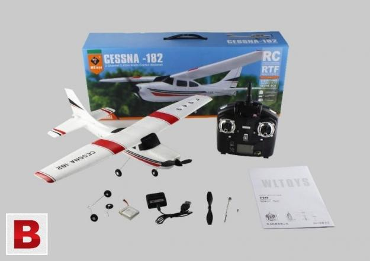
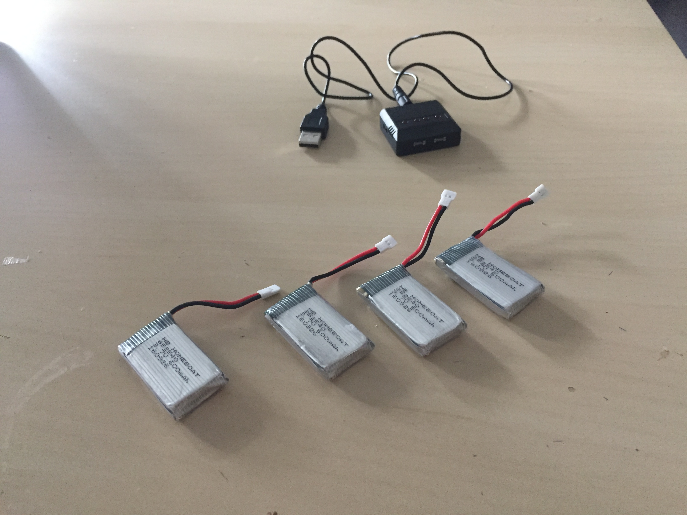
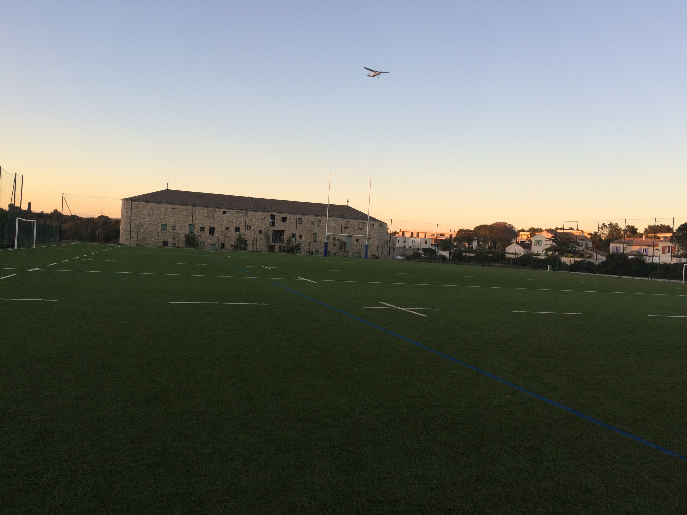
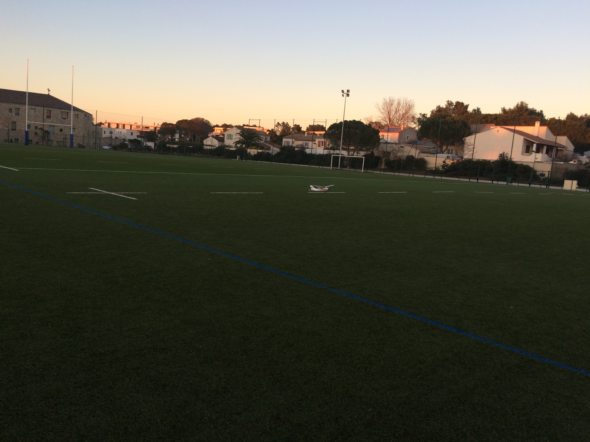
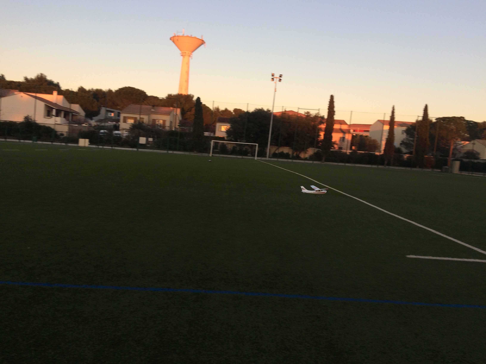
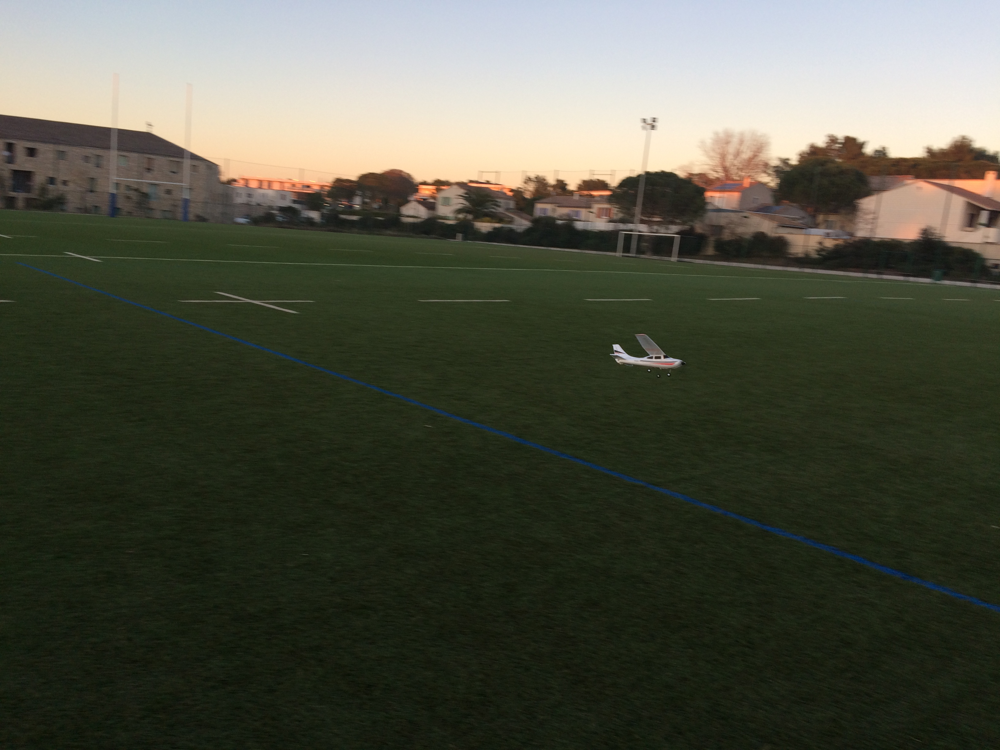
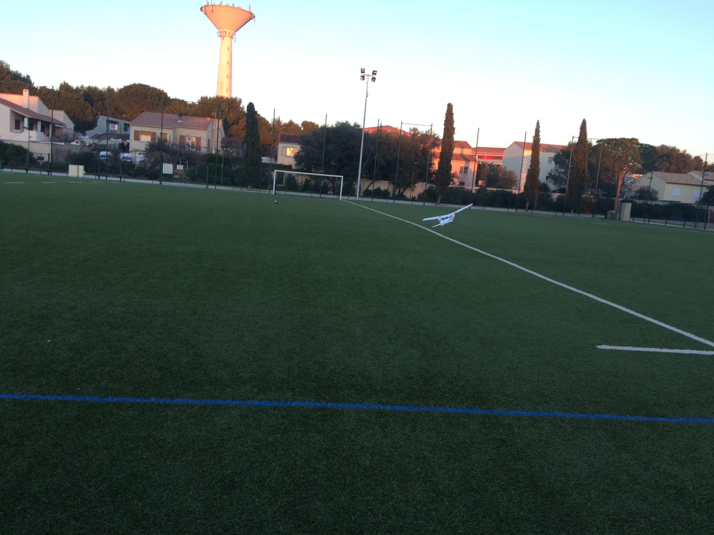

Test du cessna 182 (F949) de chez WLtoys
Bonjour à toutes et à tous.
Aujourd’hui, je vais vous présenter le Cessna 182 de chez WLtoys. Un avion peu cher (55 €) et idéal pour les débutants.
Présentation
Cet avion radiocommandé est composé d’un matériau appelé EPP (polystyrenne) très résistant aux chocs. Ce qui est idéal quand on débute. Il est livré avec une baterie 1s de 500mah ce qui lui procure une autonnomie de 20 à 30 min. Dans la boite, vous retrouverez aussi la télécommande et une hélice de rechange.
Cet avion est composé de 3 channels, gouverne de profondeur et direction et les gazs. Vous l’aurez compris, il y’a pas d’ailerons. Il est extrêmement maniable, je me suis régalé à le piloter et il sera parfait comme premier avion pour un débutant.
L’avion est assez petit et très léger donc il ne faut pas de vent pour le faire voler ou très très peu.
Sa petite taille peut permettre de le faire voler dans une salle indoor. Je n’ai pas encore eu l’occasion de le tester dans une session indoor.
Contenue de la boite
Lors de l’ouverture vous retrouverez :
- Le fuselage complet
- L’aile (à assembler avec un tournevis)
- La télécommande en 2,4Ghz
- 1 baterrie lithium 1s
- 1 chargeur USB
- Hélice de rechange
Le seul inconvénient est le chargeur qui est USB mais en soit ce n’est pas très génant. Je le branche sur mon ordinateur ou sur le bloc USB de mon téléphone.

Mesures
- Envergure: 50 cm
- Longueur: 37 cm
- Poid: 58 gr
Compléments
En plus de l’avion, j’ai pris un pack de 4 batteries lithium 1s 600mah m’offrant un peu plus d’autonomie. Avec ces 4 batteries je peux voler 1h30 à 2h. Elle sont livrées avec un chargeur USB semblable à celui de l’avion. Il est dotté de 4 sorties pour charger les 4 batteries en même temps. La charge dure un peu moins d’une heure.

Photos et vidéos
Photos





Vidéos
Vidéo atterrissage
Vidéo vol
Conclusion
Pour conclure, l’avion correspond aussi bien à des débutants que des personnes plus expérimentées du fait de son prix (55€) et de sa résistance.
Je vous mets les liens Amazon des articles :
Vous pouvez aussi faire comme moi et souscrire à l’offre Prenium d’Amazon à 49€, qui permet de ne payer aucuns frais de port et de recevoir des colis le lendemain. Idéal pour les impatients comme moi 🙂
Offre premium